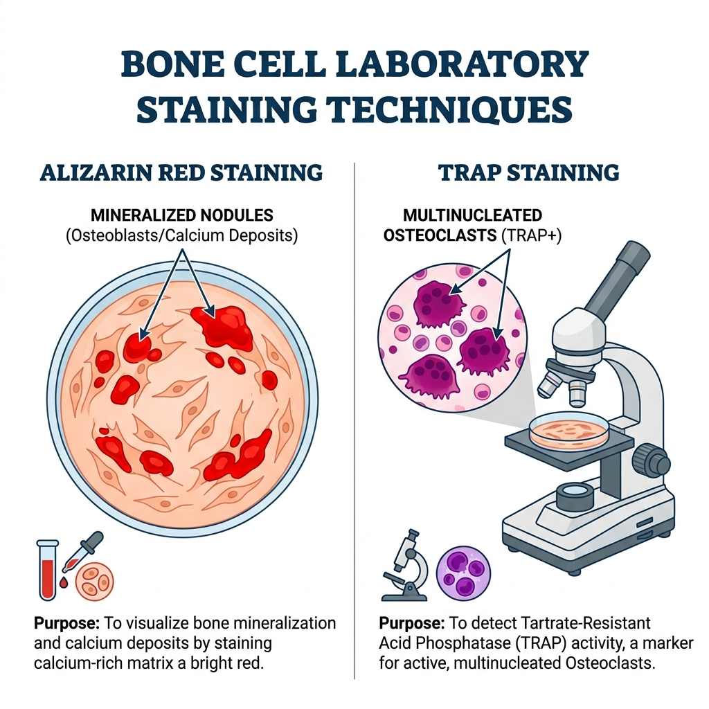

01
骨細胞特異性染色技術
不同的骨細胞有各自對應的「專屬染劑」。

1. 茜素紅染色 (Alizarin-red staining)
- 目標對象：成骨細胞 (Osteoblast) 的產物。
- 作用原理：茜素紅會與鈣離子結合，形成鮮紅色的沉澱物。
- 應用：用來評估培養皿中是否有**鈣質沉積 (Calcium deposits)**或組織鈣化 (Tissue calcification)，藉此判斷成骨細胞的活性。
2. TRAP 染色 (Tartrate-resistant acid phosphatase)
- 目標對象：破骨細胞 (Osteoclast)。
- 作用原理：破骨細胞富含抗酒石酸酸性磷酸酶 (TRAP)。染色後，多核的破骨細胞會呈現紫紅色。
- 應用：用來計算並觀察破骨細胞的數量與型態。
Which assay can be used to evaluate the calcium deposits or tissue calcification? (from BM110)
下列哪一種檢測方法可用來評估鈣質沉積或組織鈣化？
解答與解析
答案：(B)
解析：評估「鈣化 / 鈣質沉積 (Calcium deposits)」要用 Alizarin-red staining。如果是要看「破骨細胞」，才會選 (D) TRAP staining。
02
細胞活體攝影 (Live-cell Imaging)
如果我們不只要看細胞「長什麼樣子」，還要看細胞「怎麼移動」和「怎麼工作」，染色技術就無法做到了，因為染色會把細胞固定並殺死。
縮時攝影技術 (Time-lapse recording)
- 單一破骨細胞的遷移 (Migration)：要知道破骨細胞是怎麼在骨頭表面爬行的，最好的方法就是使用 Time-lapse recording (縮時攝影)。
- 雙光子縮時攝影 (Two-Photon Time-Lapse recording)：這是更高階的技術，因為穿透力強、對細胞傷害小，可以「同時觀察 (simultaneous observation)」活體內單一破骨細胞的遷移 (migration)與骨吸收活性 (bone resorption activity)。
Which of the following experimental methods would allow simultaneous observation of both migration and bone resorption activity in individual osteoclasts? (from BM111)
下列哪種實驗方法可以同時觀察單個破骨細胞的遷移和骨吸收活性？
解答與解析
答案：(C)
解析：要「同時觀察動態過程 (Migration + Activity)」，只有縮時攝影 (Time-Lapse recording) 辦得到。(A) 只能看靜態骨頭結構，(B) 只能看結果，(D) 染色會把細胞殺死，無法觀察活體動態。